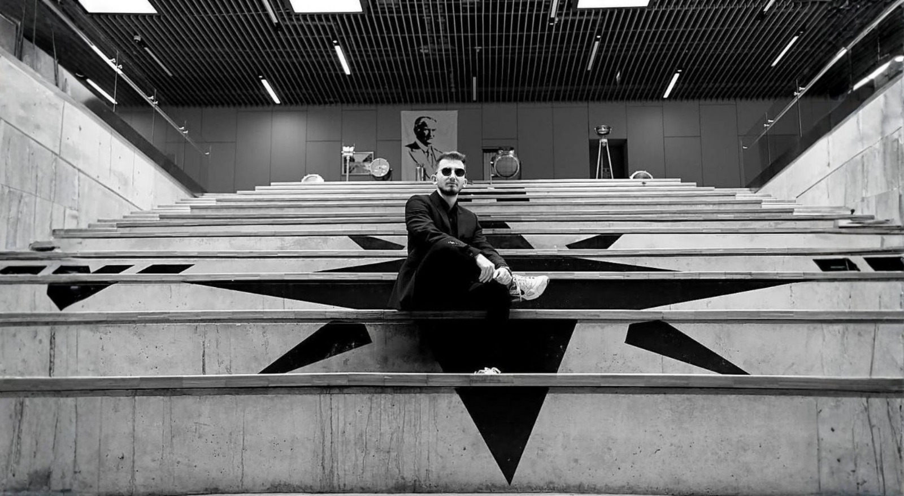

Ad Soyad: Alperen Türkoğlu
Profil: Üniversite mezunu, teknik ekip destek personeli
Eğitim: Piri Reis Üniversitesi
Konum: İstanbul, Türkiye
Temel Yetkinlikler
Hakkımda
2021 yılında Piri Reis Üniversitesi'nde öğrenim hayatıma başladım ve 2026 yılında mezun oldum. Üniversite sürecinde akademik bilgiyle birlikte çalışma disiplinimi geliştirmeye, sorumluluk almaya ve profesyonel hayata güçlü bir başlangıç yapmaya odaklandım.
2023-2026 yılları arasında Piri Reis Üniversitesi bünyesinde stajyer öğrenci olarak görev aldım. Bu süreç, düzenli takip, iletişim, ekip içi koordinasyon ve iş süreçlerine uyum konularında sağlam bir deneyim kazandırdı.
2025 yaz döneminde BTMteknik'te staj programımı tamamladım. Gösterdiğim performans ve edindiğim deneyim doğrultusunda BTMteknik bünyesinde part-time olarak görev yapmaya devam ediyorum.
Eğitim ve Deneyim
Akademik geçmiş, staj süreçleri ve profesyonel gelişim adımları.
Özet
Alperen Türkoğlu
Üniversite eğitimi boyunca sorumluluk alan, staj deneyimlerini gerçek iş süreçlerine dönüştüren ve teknik ekip içinde gelişimini sürdüren aday.
- İstanbul, Türkiye
- Piri Reis Üniversitesi mezunu
- BTMteknik part-time çalışanı
Eğitim
Piri Reis Üniversitesi
2021 - 2026
Üniversite Eğitimi
Akademik eğitim sürecinde teknik bakış açısı, disiplinli çalışma alışkanlığı ve profesyonel iletişim becerileri geliştirildi.
İş Deneyimi
Part-Time Çalışan
2025 - Devam Ediyor
BTMteknik
- Staj sürecinde edinilen deneyimi şirket içi görevlerde aktif olarak kullanma.
- Teknik ekip iş akışlarına destek verme ve günlük operasyonların düzenli ilerlemesine katkı sağlama.
- Verilen sorumlulukları takip ederek zamanında ve özenli şekilde tamamlama.
Stajyer
2025 Yaz Dönemi
BTMteknik
- Profesyonel iş ortamında uygulamalı deneyim kazanma.
- Ekip içi iletişim, görev takibi ve iş disiplini konularında gelişim gösterme.
Stajyer Öğrenci
2023 - 2026
Piri Reis Üniversitesi
- Üniversite bünyesinde akademik ve idari süreçlere destek olma.
- Düzenli çalışma, sorumluluk bilinci ve kurumsal iletişim becerilerini güçlendirme.
Yetkinlikler
Profesyonel hayatta değer üreten güçlü yönler.
Görev Takibi
Verilen işleri önceliklendirir, süreci düzenli takip eder ve sonucu net şekilde raporlar.
Ekip Uyumu
Takım içi iletişimi güçlü tutar, ortak hedeflere katkı sağlar ve sorumluluk paylaşımına uyum gösterir.
Teknik Destek
Teknik süreçlerde öğrenmeye açık, dikkatli ve çözüm odaklı bir yaklaşımla destek sağlar.
Raporlama
İş adımlarını düzenli kayıt altına alır, takip edilebilir ve anlaşılır çıktılar oluşturur.
Hızlı Öğrenme
Yeni süreçlere kısa sürede adapte olur ve öğrendiklerini uygulamaya dönüştürür.
Sorumluluk Bilinci
Güvenilir, planlı ve dikkatli çalışarak görevlerin sürdürülebilir biçimde ilerlemesini sağlar.
Üniversite Başlangıcı
İlk Staj Deneyimi
BTMteknik Başlangıcı
Mezuniyet
Çalışmalar
Eğitim ve iş deneyimini destekleyen kurumlar ve görsel materyaller.
{kind=link}
{kind=link}
{kind=link}
İletişim
Görüşme, iş birliği ve profesyonel bağlantı için ulaşım bilgileri.
Konum
İstanbul, Türkiye
Bağlı Kurum
BTMteknik
E-posta
info@alperenturkoglu.com